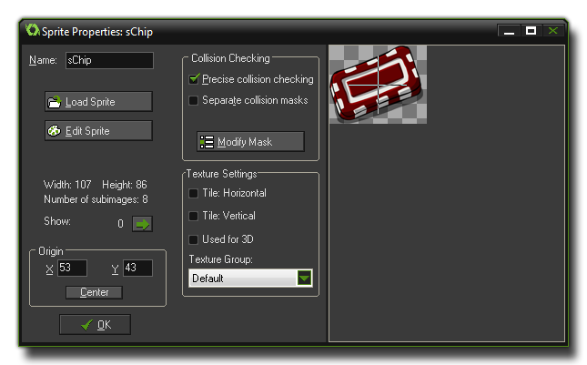

精灵一般是物体的可视化外形。因此精灵是用任意软件绘制的一张图像或一组图像，播放时一个接一个，像是循环动画。例如，下面的十张图片组成的精灵是一个角色在挥舞着手臂。

在游戏里看起来就像这样:

是不是看起来不错？大多数游戏需要你像这样制作精灵，无论是敌人还是墙还是菜单。当你开始制作一个游戏你需要为你的物体收集或者创造一组好的精灵。很多有用的 sprites 包含在 GameMaker: Studio 帮助你开始制作游戏，也可以在 YoYo Games 网站找到，作为 "占位符" 使用，直到你有足够的信心制作精美的 sprites 去替代它们。但是这些 "占位符" 不能够用于 成品。你也可以在网上找更多的精灵，通常是 PNG 或 GIF 格式的动画。
用 Resources 菜单的 Create Sprite 按钮或者工具栏上相应的按钮打开下面的窗口:

你可以看到，窗口的左上方有精灵的名字。所有的精灵 (或其他资源) 必须有一个名称使得你 (和 GameMaker: Studio!) 可以很轻松地识别它们,但值得注意的是名称本身只是一个变量，你应该给每个精灵一个描述性的名称以便可以一眼识别特定的资源是一个精灵或是其他的什么，很多人通常会加一个 "spr" 前缀或后缀。例如，上面的 sprites 可以命名为 spr_SkyDiver 或 SkyDiver_spr。尽管不是强烈要求，但是建议你仅使用字母、数字和下划线为它们命名，并且第一个字符不能是数字。一旦你开始使用代码，这将变得十分重要。
单击 Load Sprite 加载精灵。会打开一个特殊的对话框，选择你想导入到 GameMaker: Studio:
剩下的只是在你的电脑里找到合适的图片导入即可。在右边有图片的预览和一些关于文件大小的信息。当你导入 GameMaker: Studio 精灵时在这里你还可以选择不透明 (去除任何透明部分)、去除背景色 (如果有使其透明)或者平滑边缘(如果它是透明的)。选好了这些选项按下 Open 按钮把 sprite 载入 GameMaker: Studio。
GameMaker: Studio 可以加载多种格式的图片如 JPG、BMP、PNG 和 GIF。当然你还可以导入 SWF 矢量 sprites 和 JSON 格式的骨骼动画 sprites (用 Spine 创建的)。加载不同格式图片应该注意的事情:
- 当你加载一个 gif 动画，动画不同的帧将自动分割成 sprites 不同的帧
- 当文件名以 _stripXX 结尾，会被认为包含 XX 个子图像，GameMaker: Studio 将会如此加载。例如，一个图像名为 ball_strip4.png 被假定为包含4个子图像，并且在加载时拆分。
- 如果你想加载到 GameMaker: Studio 的图片不是上述格式，你需要打开 Sprite Editor File Menu (精灵编辑器文件菜单)。
- 尽管支持 JPG 格式，但尽量避免使用，因为这种格式的图像质量一般比 PNG 和 BMP 格式的图像低。
一旦加载好精灵，就会返回精灵的 properties (属性) 窗口，第一个子图像会显示在屏幕的右边。当有多个子图像时，你可以通过方向按钮浏览他们。做任何更改之后请点击 "Save (保存)" 按钮。
更深入地了解 GameMaker: Studio 的 sprite editor 以及 SWF 和 JSON 格式的详情，可以到本手册的 高级部分 浏览相关内容。
| Converted from CHM to HTML with chm2web Pro 2.85 (unicode) |